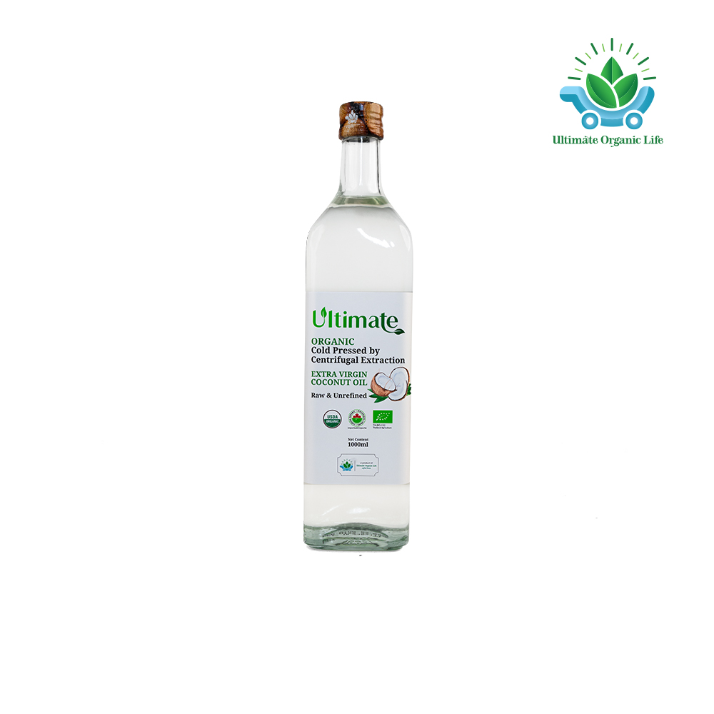
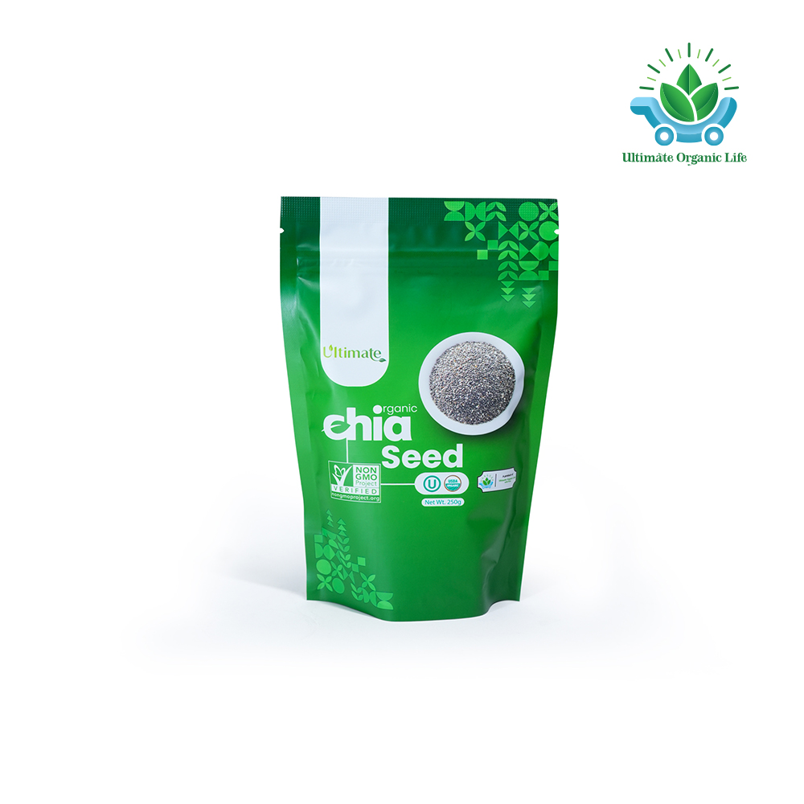
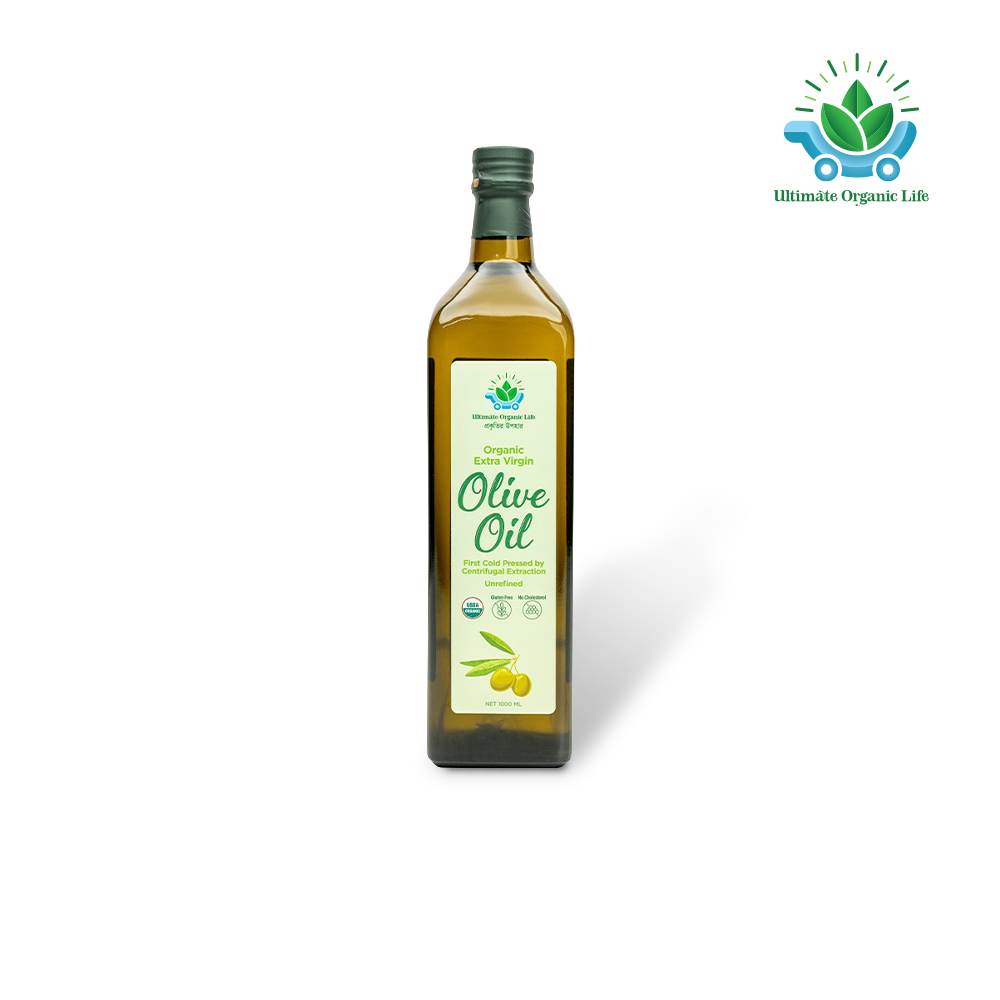
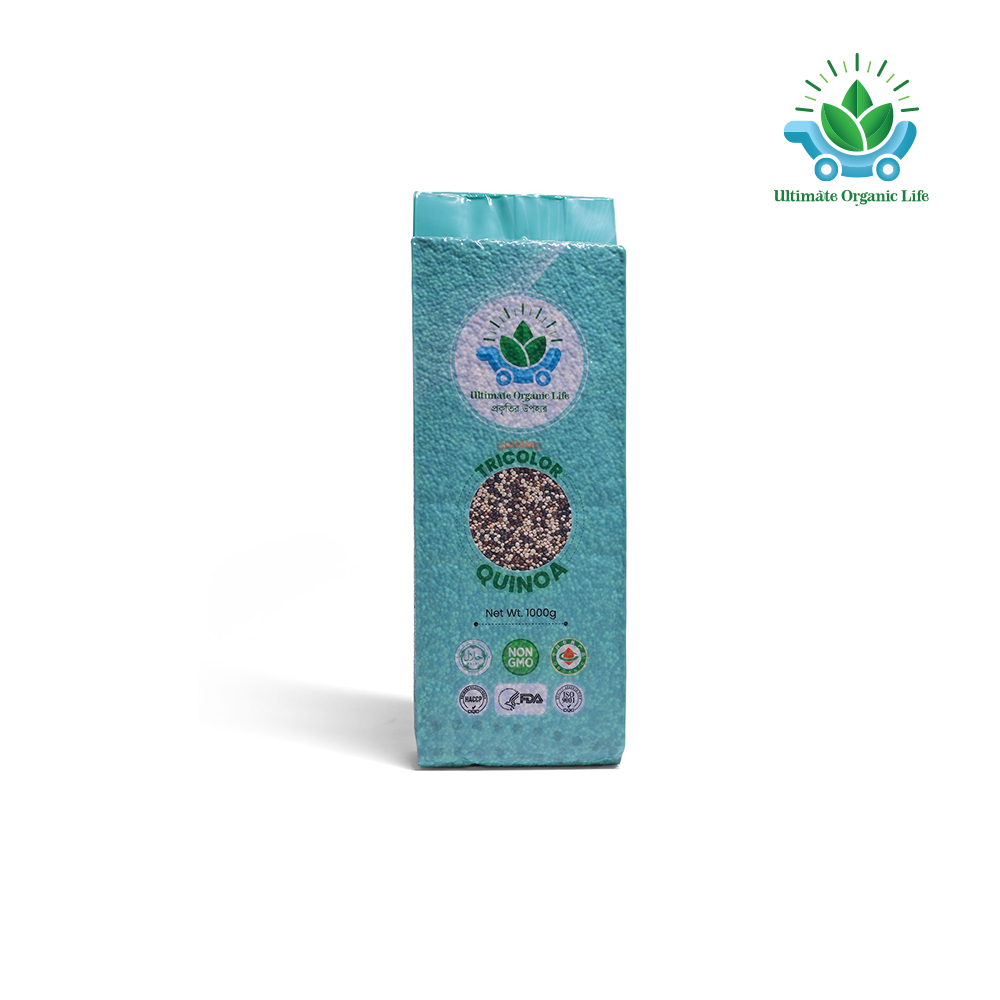

The JK Lifestyle Ecosystem — Organizations & Initiatives
To make healthy living accessible to every household, Dr. Muhammad Jahangir Kabir (ডা. জাহাঙ্গীর কবির) created the JK Lifestyle Ecosystem — a connected family of five organizations devoted to clinical consultations, Bioagricert-certified organic superfoods, metabolic fitness, culinary education, and sustainable agriculture.
Initiatives & Organizations Of The JK Lifestyle Ecosystem
To spread accurate knowledge about healthy living and make lifestyle-related guidance and services easily accessible to the public, Dr. Jahangir Kabir has founded these organizations within the JK Lifestyle Ecosystem.
JK Lifestyle
The primary platform of Dr. Jahangir Kabir. Through its vast open information resources, people can access essential knowledge to achieve and maintain good health naturally.
Health Revolution
A free platform where people can receive professional advice from lifestyle specialists, doctors, and nutritionists. It also offers essential diagnostic tests at affordable costs.
JK Fitness Arena
Focused on one of the core pillars of lifestyle exercise within the JK Lifestyle Ecosystem. This center provides regular training, guidance, and fitness programs for both members and visitors.
JK Food Arena
Dedicated to promoting healthy eating habits, this initiative educates people on identifying, selecting, and preparing nutritious foods essential for a balanced lifestyle.
Ultimate Organic Life
This platform sources and supplies Bioagricert-certified organic medicinal superfoods from around the world, helping individuals follow a truly organic lifestyle.
JK Prakritik Krishi
Dedicated to research and development in organic and sustainable food production, ensuring access to safe and healthy food sources.
Ultimate Organic Life — Superfoods Sourced Worldwide
A cornerstone of the JK Lifestyle Ecosystem: organic, medicinal superfoods chosen by ডা. জাহাঙ্গীর কবির to help families follow a truly chemical-free diet.

Extra Virgin Coconut Oil
Cold-pressed organic coconut oil rich in MCTs for healthy cooking, bulletproof coffee, and metabolic support.
Shop on UOL
Organic Chia Seed
Nutrient-dense superfood rich in Omega-3, dietary fiber, antioxidants, and plant protein for daily hydration.
Shop on UOL
Extra Virgin Olive Oil
Pure cold-pressed olive oil packed with heart-healthy monounsaturated fats and natural polyphenols.
Shop on UOL
Organic Tricolor Quinoa
Low-glycemic whole grain with complete amino acids and high fiber — ideal for diabetes-friendly meals.
Shop on UOL